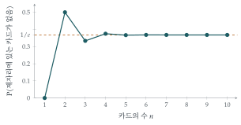

STEP II 2016, 문제 12
계속 읽기 전에 문제를 먼저 읽어 보자. 문제는 STEP Support Programme의 문제 데이터베이스에 있다: step.maths.org/questions/16-s2-q12
도입
열한 명의 축구 선수가 급하게 옷을 갈아입느라 아무 셔츠나 집어 든다. 아무도 자기 셔츠를 입지 않게 될 확률(probability)은 얼마일까? 이번에는 선수단이 쉰 명이라고, 혹은 군중이 백만 명이라고 해 보자. 틀릴 사람이 더 많아지니 확률이 올라갈까? 아니면 운 좋게 맞힐 사람도 더 많아지니 내려갈까? 놀랍게도 확률은 거의 변하지 않는다. 다섯 명부터는 확률이 \(1/e \approx 0.368\)과 0.5퍼센트 이내로 차이 난다.
이것은 조합적 확률론에서 가장 오래된 문제로, 1708년 Pierre de Montmort가 problème des rencontres(만남의 문제)라는 이름으로 제기하였다. 이 문제는 겹치는 대상을 세는 도구인 포함배제의 원리(inclusion–exclusion principle)로 이 문제를 풀며, 그 답은 수학에서 \(e\)가 가장 뜻밖에 등장하는 사례 가운데 하나이다.
시작하기 전에
\(n = 3\)인 경우를 해 보자. 카드 \(1, 2, 3\)을 늘어놓는 여섯 가지 순서를 모두 적고, 어떤 카드도 제자리에 있지 않은 것이 몇 개인지 세어 보자. 인내심이 있다면 \(n = 4\)인 경우도 해 보자(\(24\)가지 순서가 있다).
\(n = 3\)일 때 어떤 카드도 제자리에 있지 않은 것은 \(231\)과 \(312\)뿐이므로 확률은 \(\frac26 = \frac13\)이다. \(n = 4\)일 때는 \(24\)가지 중 \(9\)가지가 그러하므로 확률은 \(\frac38 = 0.375\)이다. 제자리에 고정된 카드가 하나도 없는 배열을 교란순열(derangement)이라 한다.
차근차근 풀기
단계 1 세 사건에 대한 포함배제
두 사건에 대한 공식을 적용할 수 있도록 \(A \cup B \cup C\)를 두 사건의 합사건으로 나타내려면 어떻게 해야 할까?
\(A \cup B\)를 하나의 사건으로 보고, 이것과 \(C\)에 공식을 적용한다. \[\mathrm{P}(A \cup B \cup C) = \mathrm{P}(A \cup B) + \mathrm{P}(C) - \mathrm{P}\bigl((A \cup B) \cap C\bigr).\] 이제 \((A \cup B) \cap C = (A \cap C) \cup (B \cap C)\)이고, 공식을 한 번 더 적용하면 \(\mathrm{P}\bigl((A \cap C) \cup (B \cap C)\bigr) = \mathrm{P}(A \cap C) + \mathrm{P}(B \cap C) - \mathrm{P}(A \cap B \cap C)\)이다. \(\mathrm{P}(A \cup B)\)도 전개하여 항을 정리하면 결과를 얻는다.■
네 사건에 대해서도 같은 패턴이 이어진다. 네 개의 단일 확률을 더하고, 여섯 개의 두 사건 교집합을 빼고, 네 개의 세 사건 교집합을 더한 다음, \(\mathrm{P}(A \cap B \cap C \cap D)\)를 뺀다.
단계 2 확률 구하기
카드 \(i\)가 \(i\)번째 자리에 있다면 나머지를 배열하는 방법은 몇 가지일까? 카드 \(i\)와 \(j\)가 모두 고정되어 있다면 어떨까?
일어날 가능성이 같은 순서가 \(n!\)가지 있다. 카드 \(i\)가 \(i\)번째 자리에 고정되면 나머지 \(n - 1\)장의 카드는 어떤 순서로든 놓일 수 있으므로 \((n - 1)!\)가지이다. 따라서 \[\begin{gathered} \mathrm{P}(E_i) = \frac{(n - 1)!}{n!} = \frac{1}{n}, \qquad \mathrm{P}(E_i \cap E_j) = \frac{(n - 2)!}{n!} = \frac{1}{n(n - 1)}, \\ \mathrm{P}(E_i \cap E_j \cap E_k) = \frac{(n - 3)!}{n!} = \frac{1}{n(n - 1)(n - 2)}. \end{gathered}\] 일반적으로, 지정된 \(k\)장의 카드가 모두 제자리에 있을 확률은 \(\frac{(n - k)!}{n!}\)이다.
단계 3 모두 더하기
\(\mathrm{P}(E_1 \cup \cdots \cup E_n)\)에 대한 포함배제 공식에서 \(k\)개 사건의 교집합을 포함하는 항은 몇 개이며, 그 합은 얼마일까?
\(k\)개의 사건을 고르는 방법은 \(\binom{n}{k}\)가지이고, 각 교집합의 확률은 \(\frac{(n - k)!}{n!}\)이다. 따라서 \(k\)겹 항들의 합은 \[\binom{n}{k}\frac{(n - k)!}{n!} = \frac{n!}{k!\,(n - k)!}\cdot\frac{(n - k)!}{n!} = \frac{1}{k!}.\] \(k!\)를 제외한 모든 것이 약분된다. 부호를 번갈아 붙이면 \[\mathrm{P}(\text{적어도 한 장의 카드가 제자리에 있음}) = 1 - \frac{1}{2!} + \frac{1}{3!} - \cdots + (-1)^{n+1}\frac{1}{n!}. \qed\] 따라서 교란순열이 될 확률은 \[d_n = 1 - 1 + \frac{1}{2!} - \frac{1}{3!} + \cdots + (-1)^n\frac{1}{n!} = \sum_{k=0}^{n}\frac{(-1)^k}{k!}.\]
단계 4 정확히 한 장
정확히 한 장의 카드만 제자리에 있으려면, 그 카드는 어느 것이고 나머지 카드는 어떠해야 할까?
제자리에 있을 카드를 고른다(\(n\)가지). 카드 \(i\)가 제자리에 있을 확률은 \(\frac1n\)이고, 그런 조건에서 나머지 \(n - 1\)장의 카드는 자기들끼리 교란순열을 이루어야 하며, 그 확률은 \(d_{n-1}\)이다. 따라서 \[\mathrm{P}(\text{정확히 한 장}) = n \cdot \frac{1}{n} \cdot d_{n-1} = \sum_{k=0}^{n-1}\frac{(-1)^k}{k!}. \qed\]
돌아보기
많이 센 다음 바로잡기. \(\mathrm{P}(E_i)\)를 더하면 두 장의 카드가 고정된 배열이 두 번 세어진다. 두 사건의 교집합을 빼면 이것은 바로잡히지만 세 사건의 경우에는 너무 많이 빼게 되며, 이런 식으로 계속된다.
대칭성이 항들을 같게 만든다. 모든 \(k\)겹 교집합의 확률이 같으므로, 공식의 각 층은 하나의 수에 이항계수를 곱한 것이 된다.
더 작은 경우로 환원하기. “정확히 한 장”은 \(n - 1\)장 카드의 교란순열 문제가 되었다.
숨은 수학
\(e\)는 어디서 오는가
급수(series) \(\sum (-1)^k/k!\)는 지수급수 \(e^x = \sum x^k/k!\)에 \(x = -1\)을 대입한 것이다. 따라서 \(n \to \infty\)일 때 \[d_n \to e^{-1} \approx 0.3679,\] 이고, 정확히 한 장이 일치할 확률도 같은 극한으로 간다. 수렴(convergence)은 놀라울 정도로 빠르다(그림 9.8.1). \(1/n!\)에서 멈출 때의 오차는 \(1/(n + 1)!\)보다 작으므로, \(n = 7\)이면 이미 답이 소수점 아래 넷째 자리까지 \(1/e\)와 일치한다. 사실 \(n\)개 대상의 교란순열의 개수 \(n!\,d_n\)은 정확히 \(n!/e\)에 가장 가까운 정수이다.

일치하는 개수는 푸아송 분포를 따른다
더 많은 것이 성립한다. 제자리에 있는 카드의 수를 \(N\)이라 하자. 그러면 각 \(k\)에 대하여 \(\mathrm{P}(N = k) \to \frac{e^{-1}}{k!}\)이다. 즉 일치하는 개수는 극한에서 평균이 \(1\)인 푸아송 분포(Poisson distribution)를 따른다. 평균이 \(1\)인 이유는 계산 없이도 알 수 있다. \(N\)은 \(E_1, \ldots, E_n\)의 지시변수(indicator variable)들의 합이고, 각 지시변수의 기댓값(expectation)은 \(\frac1n\)이며, 사건들이 독립이 아니더라도 기댓값은 더할 수 있다. STEP III 2004 Q12(연습문제에 있다)는 분산(variance)도 \(1\)임을 보인다. 푸아송 분포는 일어날 가능성이 낮고 거의 독립인 사건이 많을 때마다 나타난다. 교란순열은 그 고전적인 예이며, 12장 12.11 절의 주제이기도 하다.
프랑스 귀족 Pierre Rémond de Montmort는 Essay d’analyse sur les jeux de hazard(1708)에서 운에 좌우되는 게임을 연구하였다. treize(열셋) 게임에서 한 사람이 “하나, 둘, 셋, …”을 외치며 카드 열세 장을 한 장씩 나누어 주는데, 나누어 준 카드가 외친 수와 한 번이라도 일치하면 이긴다. Montmort는 이길 확률을 구하였고, 니콜라우스 베르누이(Nicolaus Bernoulli)와 주고받은 서신을 통해 1713년까지 일반 공식이 확립되었다. 오일러(Euler)는 1753년에 이를 다시 발견하였다. 포함배제의 원리는 나중에 드 무아브르(Abraham de Moivre)가, 그리고 일반적인 형태로는 19세기에 실베스터(James Joseph Sylvester)가 정식화하였다.
사고 기술
서로 겹치는 집합들의 합집합의 크기를 세려면, 각 집합의 크기를 더하고, 두 집합씩 겹치는 부분을 빼고, 세 집합씩 겹치는 부분을 더하는 식으로 계속한다.
이 방법은 이 문제에서처럼 대칭성 덕분에 같은 크기의 겹침이 모두 같을 때 가장 강력하다. 대학에서는 조합론, 확률론, 그리고 정수론에서 나타난다. 정수론에서는 주어진 소수(prime)들 중 어느 것으로도 나누어떨어지지 않는 정수를 세는 데 쓰이며, 오일러 피 함수(Euler’s totient function)와 뫼비우스 함수(Möbius function)로 이어진다.
더 도전하기
셔츠. STEP III 2004, 문제 12를 풀어 보자. 이 문제는 자기 셔츠를 입은 선수의 수를 지시변수로 세고, 평균과 분산을 구한 다음, 그 결과를 푸아송 분포와 비교한다.
점화식. \(n\)개 대상의 교란순열의 개수를 \(D_n\)이라 하자. 카드 \(1\)이 어디로 가는지, 그리고 그 자리에 있던 카드가 \(1\)번째 자리로 가는지를 고려하여 \(D_n = (n - 1)(D_{n-1} + D_{n-2})\)임을 보여라. 이 식을 \(D_3 = 2\), \(D_4 = 9\)와 대조하여 확인해 보자.
정확히 \(k\)장. 정확히 \(k\)장의 카드가 제자리에 있을 확률이 \(\frac{1}{k!}d_{n-k}\)이고, 이것이 \(\frac{e^{-1}}{k!}\)로 수렴함을 보여라.
서로소인 정수. 포함배제를 이용하여 \(1\)부터 \(30\)까지의 정수 중 \(2\), \(3\), \(5\) 어느 것으로도 나누어떨어지지 않는 것의 개수를 세어라. 그 답은 \(30\bigl(1 - \frac12\bigr)\bigl(1 - \frac13\bigr)\bigl(1 - \frac15\bigr)\)와 어떤 관계가 있는가?
더 읽을거리
Geoffrey Grimmett & Dominic Welsh, Probability: An Introduction (Oxford University Press). 포함배제와 일치 문제를 다루는 대학 1학년 교재이다.
William Feller, An Introduction to Probability Theory and Its Applications, Vol. 1 (Wiley), Chapter IV. 일치 문제의 다양한 변형을 담은 고전이다.
Miklós Bóna, A Walk Through Combinatorics (World Scientific). 포함배제에 관한 내용이 있다.